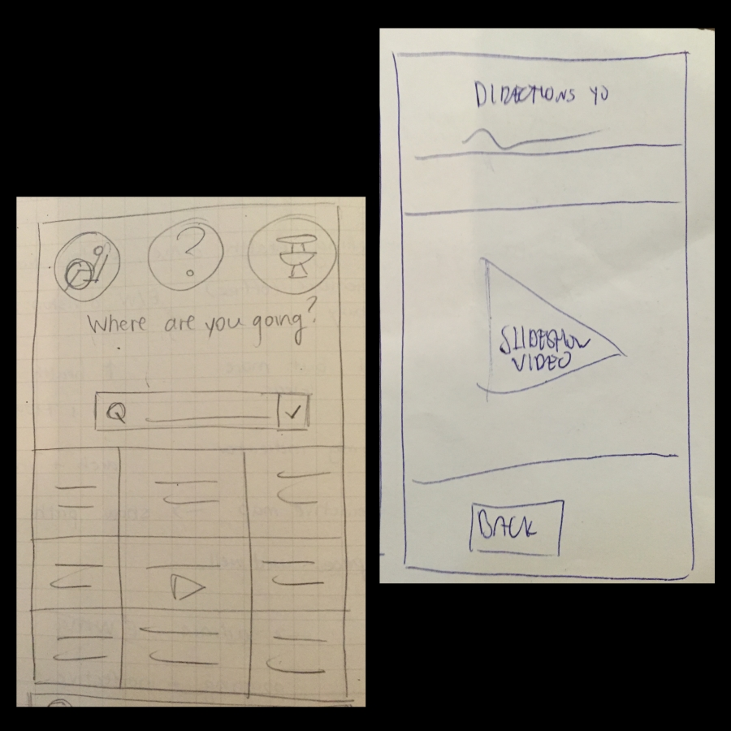
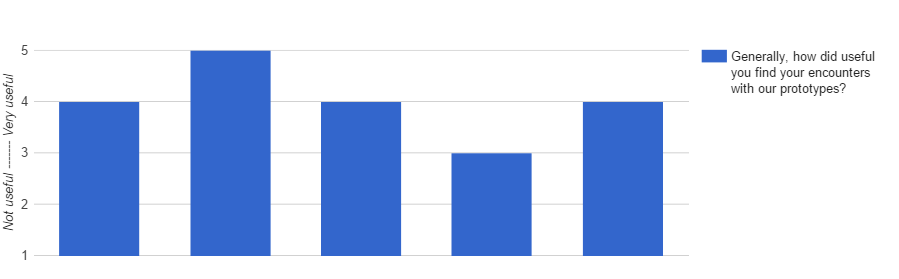

Thinking back on the problem definition we established after conducting user observations – that being, improving human-spacial understanding and navigation – we were left with a sizable domain to explore in terms of design.
Our high-level model only proposed the implementation of wireless beacons to broadcast URL addresses to mobile devices in close proximity, hopefully giving the user context-appropriate directions based on their current location. We did not know what the web pages should display, how the information should be presented, or how the users would actually use or react to the technology. To investigate the idea from all angles, we used the 10-plus-10 method, generating 30 sketches total, then developed three of the most promising concepts in parallel.
Fig. 1 - television
Fig. 2 - all-in-one computer
Fig. 3 - video

Fig. 4 - slideshow
Fig. 5 - scroll page
Fig. 6 - modular
Fig. 7 - text and options
Fig. 8 - mini maps
Among the sketches depicted above, those in figures 3, 4, and 5 were determined to be the best. Figure 9 depicts some of the concept development that took place, experimenting with different layouts and content organization. The design pictured below was never used.
Fig. 9 - sketches being developed in parallel
Prototypes
Preliminary sketches were discussed extensively before prototyping began. Because we wished to present a number of cohesive design concepts to users for testing, we took a rather multidisciplinary approach when deciding on appropriate interfaces that could be demonstrated in accompaniment to the presentation technique itself. One of the sketches that we developed further was abandoned at this stage because it was too similar to current solutions.
Prototypes used in testing are listed below:
Slideshow: This design feeds the user step-by-step instructions using photo-based slides depicting important landmarks and accompanied by textual directions. The motivation for this prototype was inspired by the notion of memory palaces, a mnemonic device that is often used in speed-reading. By selecting landmarks ahead of time, the user would theoretically require less mental effort to navigate through a path, because they would already have mental nodes for information retrieval. The slideshow prototype also allows users to proceed at their own pace, go back and forth between photos, or abandon navigation at any point.
Fig. 10 - slideshow landing and first slide
Fig. 11 - slideshow second and third slide
Fig. 12 - final slides of slideshow
Fig. 13 - sample bathroom and events pages
The central theme in terms of presentation was modularity, which is also an important quality measure in software development. We tried to divide the homescreen into very clear sections (see figure 10), following the manner in which we divided wayfinding into landmark-identification. Real photos were used instead of rough sketches, because testing would be impossible if users did not see lifelike images of the landmarks.
Timelapse: This design explores the effectiveness of information-dense visual exposures being used to show test subjects their full path through a high-speed timelapse. Our technique relied on an attempt to prime the user's memory by activating regions of the brain involved in spatial awareness before any actual navigation began. We selected a route from the lobby to the International Student Services office for testing.
Fig. 14 - timelapse video used for testing
Fig. 15 - timelapse landing
Fig. 16 - sample play and info pages
Here, continuity was our central focus, which served as a near-perfect complement to that presented in the Slideshow prototype. The homescreen is meant to emulate a movie reel, with clear buttons signifying 'play' functionality. Again, because testing of any value was highly dependent on the brief exposure's semblance to reality, an actual video was shown to users once they began navigation.
Usability goals and benchmark tasks
The system's usability goals were quickly determined upon reexamination of our different audience segments. We justify the selected goals below.
The system should be effective as a wayfinding tool.
If the user is unable to navigate to their destination, the system immediately fails by not meeting the user's needs. If the user gets lost along the way or must revert back to classic navigation (i.e. maps or asking a person), the system holds no value.
The system's functionality should be immediately understandable.
Users, particularly those belonging to the Social Traveller segment, seem to have default mechanisms for wayfinding. If these users do not understand how to use the system at a glance, they will likely fall back to their old wayfinding methods.
The system should be highly accessible to users with physical limitations.
Particularly relevant to the Brown building because it houses Student Health Services, a highly accessible system is important. However, most locations in which an indoor navigation tool would be useful (museums and hospitals, for example) also require consideration to those who are handicapped.
The system should be easily operable.
If users are too focused on their interaction with our system, it creates a potentially dangerous situation given that they could be travelling down staircases, through crowds, or along slippery hallways. From our observations, the Independent Wanderers tend to study maps and information sources; we do not want these users getting injured as a biproduct of interaction with our system.
The system should be generally acceptable among users.
Because we believe an indoor navigation system should be transportable to different locations, low barriers to use are central to its success. The system is inherently not necessary, so users must see immediate benefit with very little effort.
Overview of benchmark tasks
Task description
Association to goals
Initiate navigation to the nearest bathroom
Relates to goals 2 and 4: a bathroom button is visible on the landing page. The functionality of this button should not confuse or surprise users. Operating this button requires only a tap.
Initiate navigation to a particular event
Relates to goals 2 and 4: an events button is also visible on the landing page. Its functionality should not confuse or surprise users. Operating this button requires only a tap.
Initiate navigation to a student service office
Relates to goals 2 and 4: a total of nine student services buttons are visible on the landing page. Their functionality should not confuse or surprise users. Operating each button requires only a tap.
Initiate navigation that is wheelchair-friendly
Relates to goals 2 and 3: a disability button is visible on the landing page. Its functionality should not confuse or surprise users. Operating this button requires only a tap.
Initiate navigation to a specific room number
Relates to goals 2 and 4: this task requires slightly higher-level thinking by the user. They should use the search bar to find the room number in the building. The search bar is visible on the landing page, and its functionality should not confuse or surprise users. Operation of search bars is well-known.
Navigate to a given destination
Relates to goals 1 and 5: Successful navigation means that the user accepted the technology as a wayfinding tool, then correctly used the tool to navigate to the desired destination. Low barriers to acceptance are very important, as difficulty arises in getting the user to see value in an unknown system.
Navigate back to start location
Relates to goal 1: Once the user successfully navigates to their destination, they must often retrace their path to exit the building. Despite having accepted the given technology, the overall system may ultimately be a failure if users experience more problems after interactions with the system.
*Users were presented with this poster because the system is dependent on having high acceptability, and therefore little to no learning time.
Summary of test results
Test procedure
We conducted tests with a total of five users. All of them were given the appropriate documentation, and each tester had to navigate using both prototypes during a single test session. As a team of three, one person was in charge of welcoming the user and getting them to fill out both the pre- and post-test questionnaires. The other team members were the test observers, one serving as the "Wizard of Oz" computer while the other took notes. Both of the test observers asked questions. In addition to the written documentation, we also recorded audio for every test subject so that we could replay certain parts of interest.
After the subjects completed the pre-test questionnaire, we showed them the training manual (poster) and asked the users what they would do if they saw such an notice. All users answered that they would pull out their phones, so we proceeded under the assumption that a poster was indeed sufficient briefing for users to understand how to access our proposed system. This was a preliminary proof of acceptability.
Users were then shown the landing page of the first prototype, alternating between test subjects which prototype was presented first. Users were then prompted to initiate navigation on our prototype five times, with each iteration requiring a different feature relating to one of the predefined benchmark tasks.
After gathering further opinions, we proceeded to the actual navigating portion of our test. Starting from the entrance of the Brown building East Wing, the user was asked to initiate navigation to either the International Student Services office (Timelapse prototype), or the Counselling Services office (Slideshow). We recorded audio and collected data throughout the journey, taking particular note of how frequently the user had to look at the device and how calm they seemed during the trip. When the user arrived to the destination, we asked them to return to the lobby without any assistance. Again at the lobby, we repeated the test using the other prototype.
Once the two prototypes were tested, we had an informal discussion with them where they led the conversation and we only asked them to elaborate on personal opinions, or actions/comments made while navigating. Finally, they filled out a post-test questionnaire to complete the test session.
Fig. 17 - video of Test Subject #5 using the system to go to Counselling Services
Summary of test results for each benchmark test
Benchmark task
Definition of success
Test results
Success?
Initiate navigation that is wheelchair-friendly
Clicks the wheelchair button knowing it is a switch enabling only disability routes (within 5s)
Some users thought the wheelchair button was for a map showing wheelchair accessible options. Few understood it was for navigation.
No
Initiate navigation to nearest bathroom
Clicks the bathroom icon knowing it will show them the route to the nearest bathroom (within 5s)
All subjects were able to start navigation properly.
Yes
Initiate navigation to Student Service office
Clicks the correct service button, knowing it will show them the route to that office (within 7s)
Some users thought the Student Service buttons lead to information pages, and not to navigation. Otherwise, they were able to start navigation.
Yes
Initiate navigation to specific event
Clicks the events button, knowing it will show them a list of events (within 5s)
Some were confused if they should navigate to the service hosting the event, or look for the event on the "events" page. Generally, they just chose one or the other, and they were thus able to start navigation.
Yes
Initiate navigation to specific room number
Enters the room number in the search bar, knowing it will display search results for that room (within 5s)
All users immediately tried to search for the room number.
Yes
Navigate to destination
Users can successfully reach a specified destination (within 5 min)
Even the most confused subjects were able to navigate to their destination without getting lost.
Yes
Navigate to destination using timelapse feature
Users should be able to navigate after only having watched the timelapse once.
All users ended up watching the timelapse several times, frequently checking the phone or pausing to see if they were on the right track.
No
Users navigate to destination using slideshow
Users do not misidentify landmarks in photos
Some found the landmarks to be too conventional. Photos of the floor landings after elevators, for example, caused users to hesitate, and one nearly stepped out on the wrong floor.
Somewhat
Navigate back to start location
Users can navigate back to the lobby without diverging from their previous path.
Nearly all users got confused on the way back, many selected the wrong floors on their way down, and were otherwise surprised by their surroundings
No
Even though we gathered quite a bit of quantitative data in our tests, most of the more useful information was acquired from our qualitative analysis, as the users’ feedback throughout the testing process proved to be very useful in our own grasp of system deficiencies. Sometimes, the user was able to find a way to use our paper prototypes that we had not anticipated, and the benchmark tasks scoring was adjusted accordingly.
Reactions to the general interface
Most users seemed to understand the basic layout of our home screen, and were able to identify most of the key functionality, see figure below. Gerenal comments about the interface was that it was nice, easy to understand, and gave a good overview, though there were also some negative comments, describing the interface as overwhelming. Several subjects mentioned that it was not clear exactly what would happen when they pressed the buttons on the home screen,
and one subject noted that it was strange how the "events" is so close to the wheelchair and bathroom icons, asking what these things actually have in common.
Fig. 18 - percentage of correctly identified system functionality
However, not all users seemed to realize that the app was for navigation - even after we had explicitly told them. Some subjects still thought that when pressing the different icons on the screen representing a student service, this would bring up information about the service, and not necessarily ways of navigating there. Furthermore, when looking for an event hosted by one of the student services, some users remarked being confused about whether they should click the name of the service, or use the search function.
Reactions to fast-forward video timelapse
Every user we tested had the same initial reaction when trying this solution; as soon as the video started playing, they would start running to wherever the video directed them. They commented on feeling rushed, not being able to "catch up" with the video. No users stopped and watched the whole timelapse before starting to walk/run. One user simply saw that there was an elevator in the video, and ran to the nearest elevator, which did not lead to their destination. Upon rewatching the video before that elevator arrived, they were able to correct their mistake.
Virtually every test subject commented that they thought the video was going too fast. Most subjects paused the video often, and many requested more control over the way the video was presented to them. One user mentioned that they wanted the option to stop and talk with someone on the way, and then be able to resume their navigation afterwards. Some suggested segmentation of the video - for instance, that you get a video showing you how to navigate a short distance, walk, and then view a new video starting from the new location. We asked users if they would want an auto-pause feature for the video, but they did not seem to want this. One subject mentioned potentially being reluctant to start the video playback, being worried about sound coming from the phone, which would disturb others.
It is obvious that our desire of having users being able to navigate all the way to their destination, watching the high-speed timelapse only once, was not met. However, despite having initial negative reactions, once the subjects got used to this way of navigating, many responded favorably to the concept, saying they thought it was an efficient and fun way to navigate. One user compared it to going on a "scavenger
hunt", saying she would definitely use something like this for building navigation.
Reactions to the photo slideshow
Most users were very comfortable using this way of navigating. Every subject understood that the way to switch between the images was to do a "slide" gesture on the phone, and no one expressed confusion about the directions they were
given. A couple of the users mentioned this was a better way to navigate through the building than using a map, because it is linked to what you actually see, and is not an abstraction. Many of the subjects seemed to rely much
on the text beneath the pictures, in order to understand the navigation.
General reactions
In general, users seemed very pleased with our prototypes. Several users mentioned that this would be a good alternative to traditional, map-based navigation. This user satisfaction was also represented in our post-test questionnaire,
see figures below.

Fig. 19 - general subject satisfaction
Fig. 20 - comparison with existing solutions
Suggested changes
We wish to try to combine our two main "modes" of the application, namely the photo slideshow and the fast-forward timelapse video. As many users seemed to like the video concept, but felt that our current implementation made them feel rushed, we want
to try dividing the navigation video timelapse into different segments, only leading the user part of the way to the destination, possibly to some sort of identifiable "landmark". After reaching this temporary destination, the
user would get a new timelapse video, showing the navigation to another temporary point, and so on.
Furthermore, we feel like we need to refine our system interface, especailly making it clear that it is used for navigation, and not for giving information about the different building facilities and services. Most users thought the wheelchair icon on
the home page would show them accessibility information for the building, while we meant it as a way to initiate wheelchair-friendly navigation. We will therefore move this icon to be a prompt before, or a toggle option during,
the navigation itself.
 Fig. 12 - final slides of slideshow
Fig. 12 - final slides of slideshow